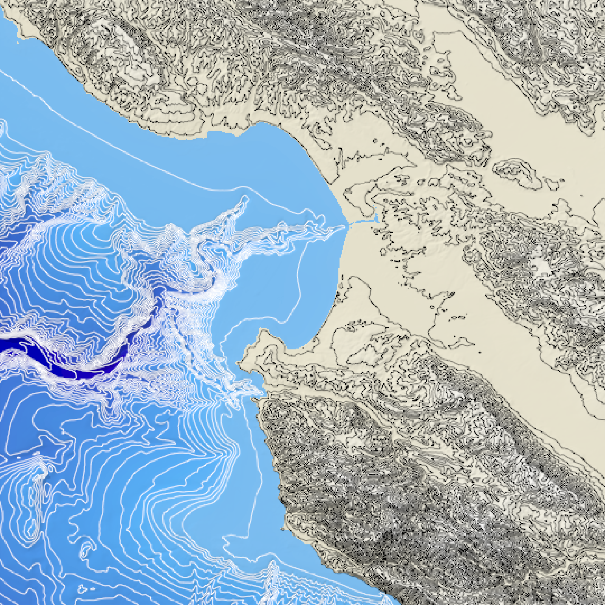
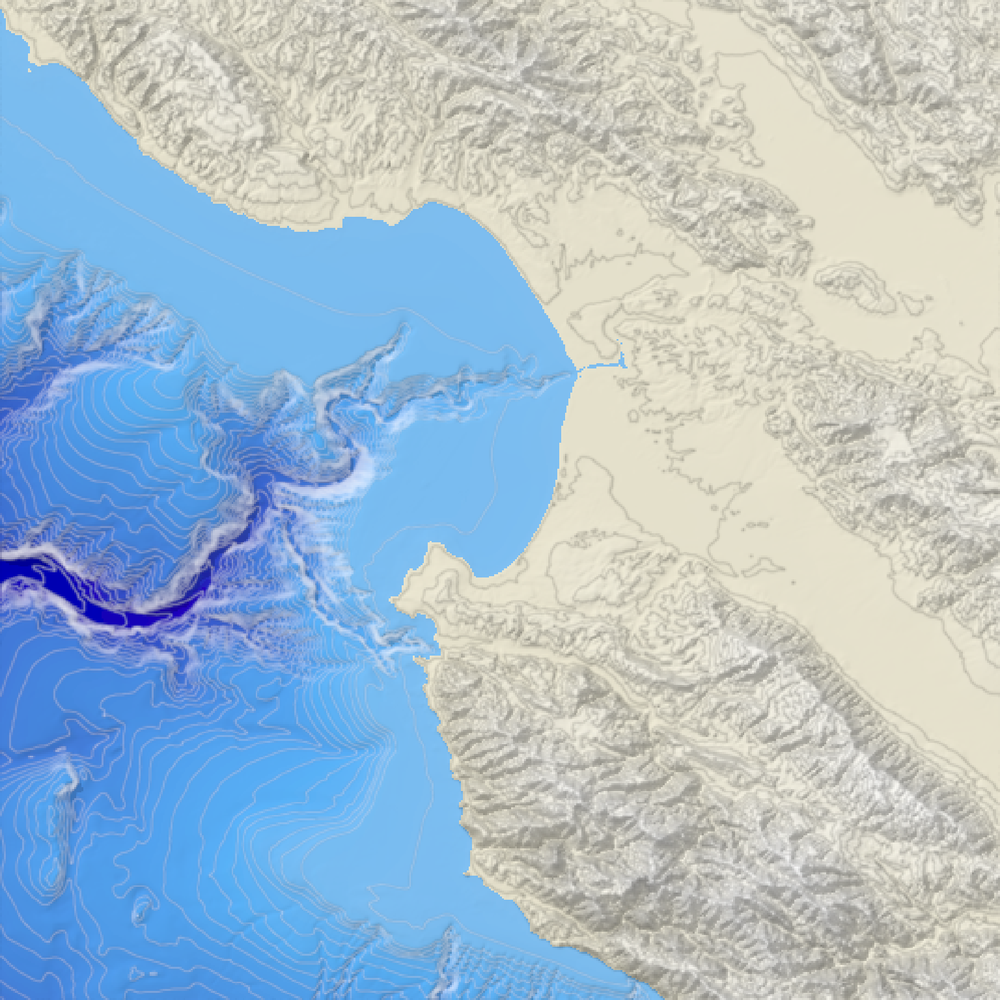
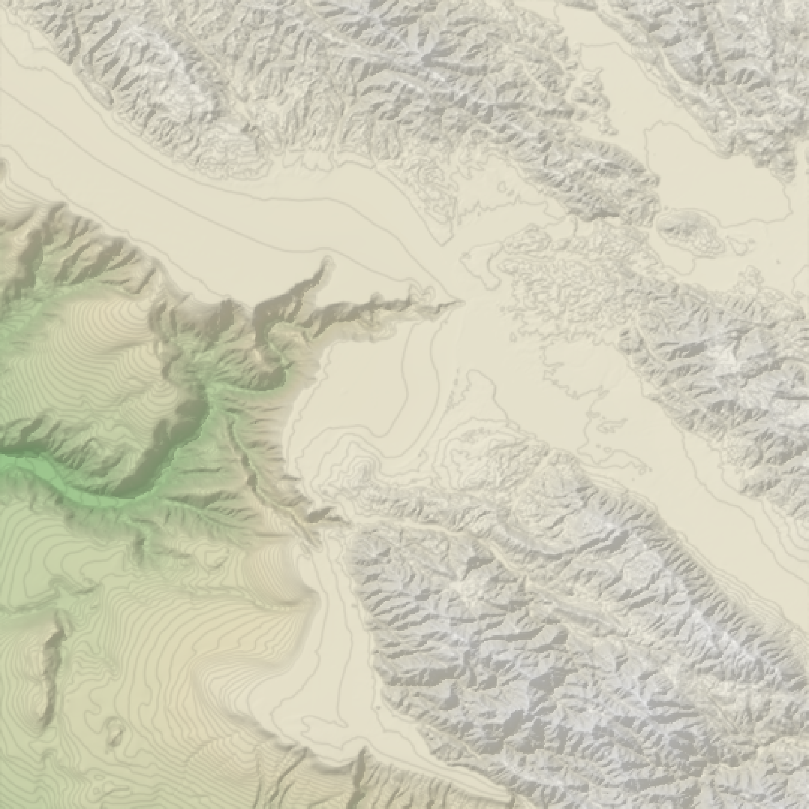
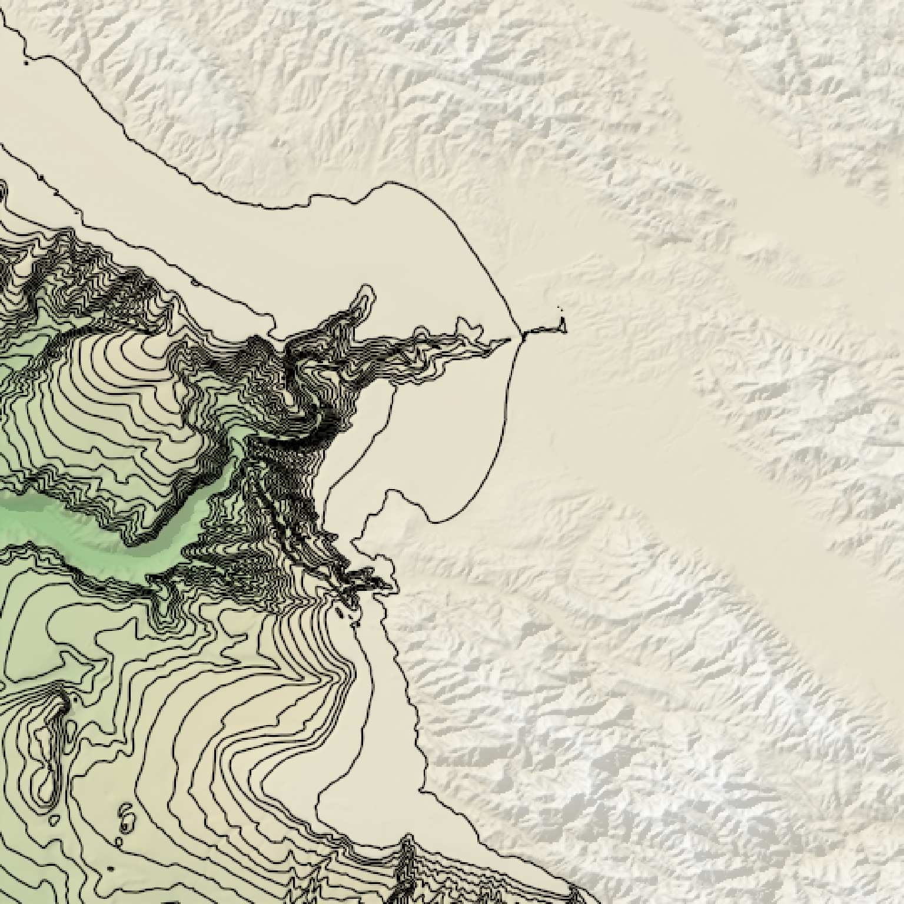

Calculates and returns an overlay of contour lines for the current height map.
generate_contour_overlay(
heightmap,
levels = NA,
nlevels = NA,
zscale = 1,
width = NA,
height = NA,
color = "black",
linewidth = 1
)A two-dimensional matrix, where each entry in the matrix is the elevation at that point. All grid points are assumed to be evenly spaced.
Default `NA`. Automatically generated with 10 levels. This argument specifies the exact height levels of each contour.
Default `NA`. Controls the auto-generation of levels. If levels is length-2, this will automatically generate `nlevels` breaks between `levels[1]` and `levels[2]`.
Default `1`. The ratio between the x and y spacing (which are assumed to be equal) and the z axis. For example, if the elevation levels are in units of 1 meter and the grid values are separated by 10 meters, `zscale` would be 10.
Default `NA`. Width of the resulting overlay. Default the same dimensions as heightmap.
Default `NA`. Width of the resulting overlay. Default the same dimensions as heightmap.
Default `black`. Color.
Default `1`. Line width.
Semi-transparent overlay with contours.
#Add contours to the montereybay dataset
if(rayshader:::run_documentation()) {
montereybay %>%
height_shade() %>%
add_overlay(generate_contour_overlay(montereybay)) %>%
add_shadow(ray_shade(montereybay,zscale=50),0.3) %>%
plot_map()
}
#Add a different contour color for above and below water, and specify levels manually
water_palette = colorRampPalette(c("darkblue", "dodgerblue", "lightblue"))(200)
bathy_hs = height_shade(montereybay, texture = water_palette)
breaks = seq(range(montereybay)[1],range(montereybay)[2],length.out=50)
water_breaks = breaks[breaks < 0]
land_breaks = breaks[breaks > 0]
if(rayshader:::run_documentation()) {
montereybay %>%
height_shade() %>%
add_overlay(generate_altitude_overlay(bathy_hs, montereybay, 0, 0)) %>%
add_shadow(ray_shade(montereybay,zscale=50),0.3) %>%
add_overlay(generate_contour_overlay(montereybay, levels = water_breaks, color="white")) %>%
add_overlay(generate_contour_overlay(montereybay, levels = land_breaks, color="black")) %>%
plot_map()
}

if(rayshader:::run_documentation()) {
#Increase the resolution of the contour to improve the appearance of lines
montereybay %>%
height_shade() %>%
add_overlay(generate_altitude_overlay(bathy_hs, montereybay, 0, 0)) %>%
add_shadow(ray_shade(montereybay,zscale=50),0.3) %>%
add_overlay(generate_contour_overlay(montereybay, levels = water_breaks, color="white",
height = nrow(montereybay)*2,
width = ncol(montereybay)*2)) %>%
add_overlay(generate_contour_overlay(montereybay, levels = land_breaks, color="black",
height = nrow(montereybay)*2,
width = ncol(montereybay)*2)) %>%
plot_map()
}

if(rayshader:::run_documentation()) {
#Increase the number of breaks and the transparency (via add_overlay)
montereybay %>%
height_shade() %>%
add_shadow(ray_shade(montereybay,zscale=50),0.3) %>%
add_overlay(generate_contour_overlay(montereybay, linewidth=2, nlevels=100,
height = nrow(montereybay)*2, color="black",
width = ncol(montereybay)*2), alphalayer=0.5) %>%
plot_map()
}

if(rayshader:::run_documentation()) {
#Manually specify the breaks with levels
montereybay %>%
height_shade() %>%
add_overlay(generate_contour_overlay(montereybay, linewidth=2, levels = seq(-2000,0,100))) %>%
add_shadow(ray_shade(montereybay,zscale=50),0.3) %>%
plot_map()
}
